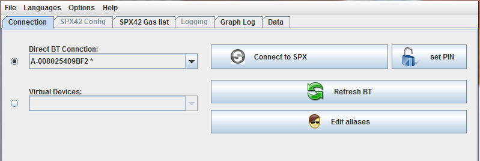
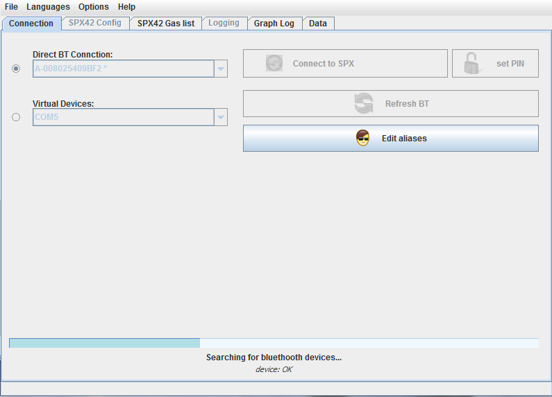
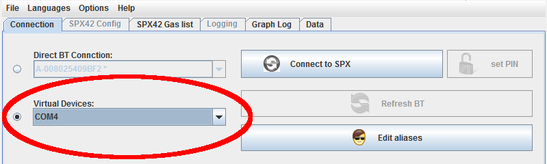
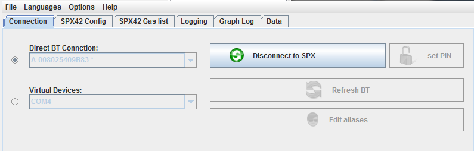
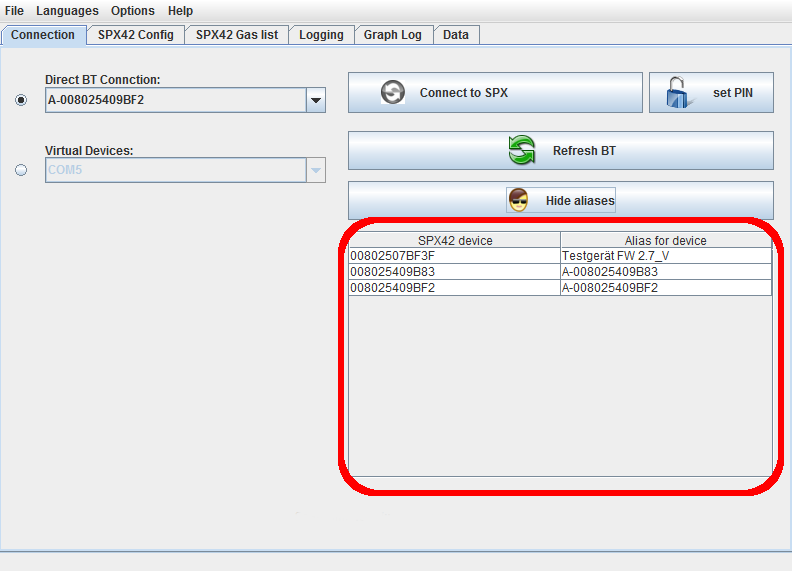
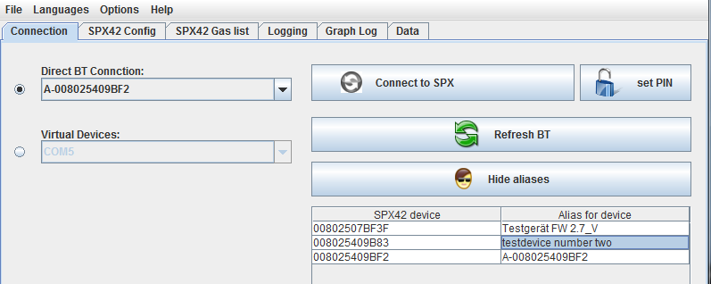

Bluethooth Connection
The Connections-Tab
After starting the program the connections tab is opened by default. Some
other tabs will be grayed out (deactivated), since they require connection
to the SPX42.
The GUI's top part should look somewhat like the displayed one:

The Connections-Tab
The Connections-Lists
There are two Connections-Lists:
Contents
The program can communicate natively, that is directly with the bluetooth
devices (in this case the SPX42).
This is made possible by the cross-platform library 'bluecove'
(http://bluecove.org/).
Bluecove is published under the Apache License 2.0.
If there are no devices displayed or none are displayed with an asterisk '*'
after the name, the 'Refresh BT' button should be pressed. (The SPX42 to read
has to be in synchronization mode for that.)
(See Libraries and Licenses)

Reading in of active BT-devices
After that the desired SPX42 can be selected from the list (drop down by
pressing the triangle symbol). SPX42s available via Bluetooth are marked by an
asterisk after the device name.
The device PIN will be recorded when the desired device is selected in the
drop-down menu and the button 'PINs...' is pressed.
Recording of the PIN is completed by inserting into the appearing dialog box,
which will save the PIN after successful connection to the internal database.
Connect SPX42
Contents
If no connection to the SPX42 can be established using a direct connection,
caused for example by manufacturer specific drivers of the Bluetooth adapter,
using virtual devices can still enable a connection.
In order to that, the operating system has to provide a virtual device port.
Procedure for that should be in the Bluetooth adapter's handbook.
After providing such a port it will be displayed in this drop-down
menu (seen here under Microsoft Windos as 'COM4').

Selected port "COM4"
Connection to the SPX42
Contents
After pressing the button 'Connect to SPX' the following should be displayed
after a short while:

Selected port 'COM4'
All buttons except the 'Disconnect from SPX' will be deactivated and all tabs
activated.
All of the program's functions will be available now.
Contents
When a device has been connected previously it can be assigned and alias. This
is useful to discern different SPX42 not using their respective device numbers
but names. The alias editor is only available if
there is no connection to the SPX.
After pressing the 'Edit Aliases' button the following should be displayed:

Alias Editor with one entry
By clicking the respective right-side entry the alias can be edited.
ENTER will terminate the editing and save the alias to the device.

Alias editor with one entry edited
After that, the alias will be instantly available in all displays. The alias
will be saved in an internal database and of course can be changed.
Pressing the 'Hide Aliases' button will hide the alias editor.
Contents